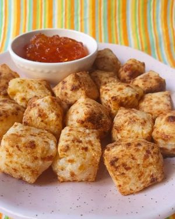

Práticos, saudáveis e deliciosos, os dadinhos de tapioca da Lulu são a melhor opção para o lanche da tarde, petiscos a noite com os amigos, ou no café da manhã dos filhos.
A praticidade dos dadinhos da Lulu é enorme, para preparar os melhores dadinhos de tapioca, basta levar ao forno, ou Air Fryer por 15 minutinhos e já está pronto para aproveitar. Quem gosta deles fritos não ficam de fora, os dadinhos também podem ser fritos e ficam perfeitos!!
Os Dadinhos de tapioca da Lulu foram criados no início de 2020 com o intuito de proporcionar um lanche saudável, prático e saboroso para a hora do lanche das crianças. Os pais adoraram os Dadinhos e passaram a saboreá-los em seu café da tarde, como petiscos com uma cerveja gelada ou um vinho.
Prezando a qualidade dos Dadinhos, a Lulu selecionou os melhores ingredientes para fornecer aos consumidores a melhor experiência so degustar os Dadinhos da Lulu
 Nos siga no Instagram
Nos siga no Instagram